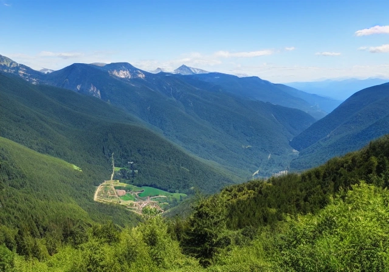
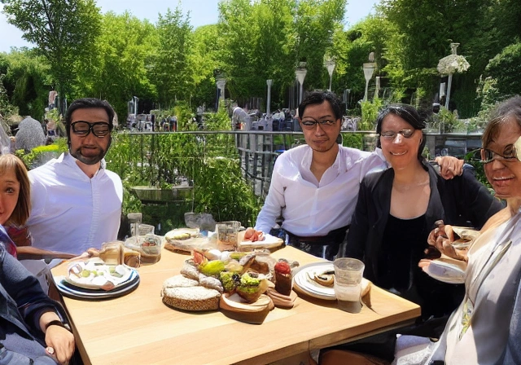
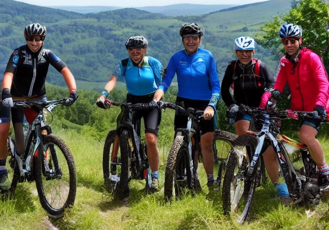
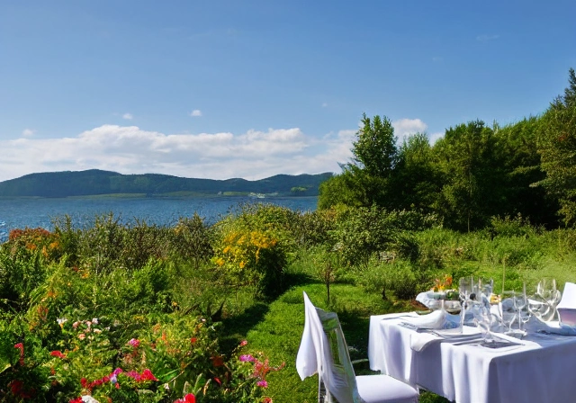

Bienvenue à Roybon
Roybon est une charmante petite ville située dans la région Rhône-Alpes, en France. Connue pour ses magnifiques paysages et son patrimoine culturel riche, elle est une destination de choix pour les voyageurs en quête de nature et de découverte.
Hébergement
Que vous cherchiez un hôtel de luxe, un gîte rural ou un camping en pleine nature, Roybon a tout ce qu'il vous faut pour un séjour confortable et agréable. Découvrez nos offres d'hébergement dès maintenant.
Activités
Que vous soyez amateur de randonnée, de VTT, de sports nautiques ou de visites culturelles, Roybon a tout ce qu'il vous faut pour des vacances actives et enrichissantes. Découvrez nos activités dès maintenant.
Restaurants
Que vous cherchiez une cuisine traditionnelle française ou une cuisine du monde, Roybon a tout ce qu'il vous faut pour satisfaire vos papilles gustatives. Découvrez nos restaurants dès maintenant.
